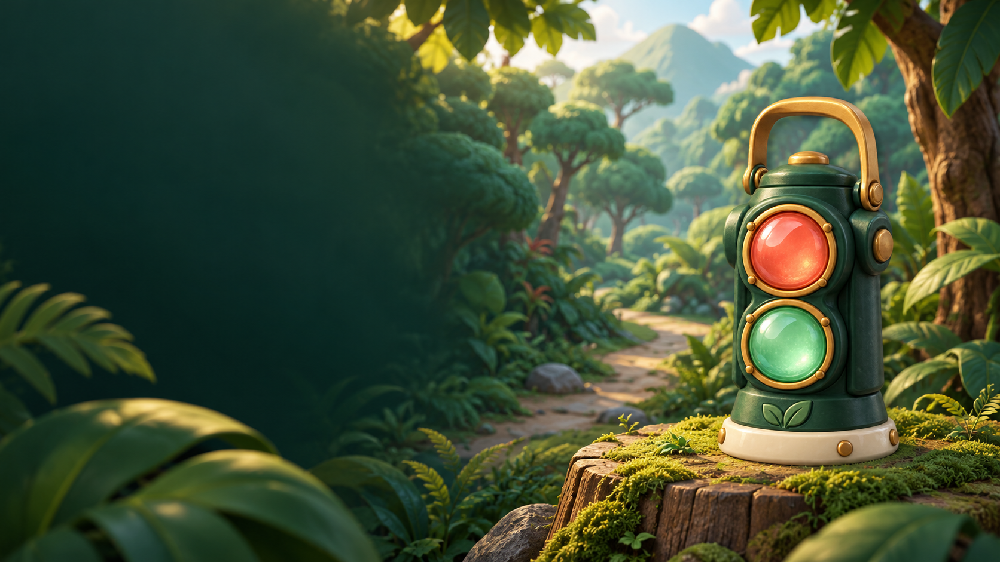

IPAS · KELAS V SD
RimbaSinyal.
Hijau, bergerak.
Merah, jadi patung.
Jelajahi cahaya dan bunyi.
Bermain dengan kamera atau tombol.
Bisa berdiri atau gerak tangan sambil duduk.
MISI PENJAGA01—06BELAJAR & GERAK
Siapkan ekspedisi
Pilih caramu
menjaga rimba.
Kamera diproses hanya di perangkat ini, tidak direkam atau dikirim. Izin diminta setelah Anda memilih “Siapkan permainan”.
◈ RIMBA SINYAL
Kontrol tombol
Catatan ekspedisi